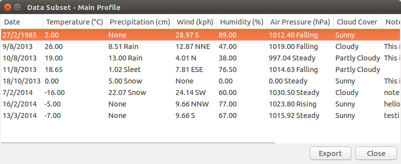
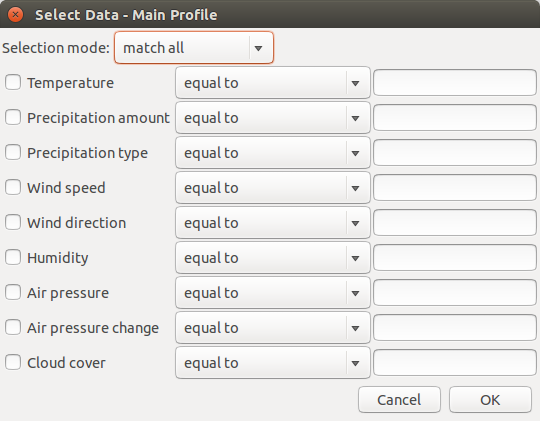

Viewing Subsets
WeatherLog can show subsets of data determined by user-specified conditions. This allows for filtering of data to see specific values.

Getting a Subset - Simple
The simplest way to get a subset is to specify a single condition. To do this, choose the Select Data item in the Info menu. This will show the simple subset window.

You can then choose the field and the comparison, and then set the value. Note that "equal to" and "not equal to" can accept multiple values, separated by a comma. In addition, "between", "between (inclusive)", "outside", and "outside (inclusive)" require two values, also comma separated.
Note that the precipitation type, wind direction, air pressure change, and cloud cover can only work with "equal to" and "not equal to", as these fields are not numerical values.
Getting a Subset - Advanced
If you want to specify more than one condition, you can use the advanced subset window, accessable from Select Data (Advanced) in the Info menu.

The selection mode determines how the data is combined. If it is set to "match all", the filtered data must match all the conditions. If it is set to "match at least one", the data must match one or more of the conditions. Finally, if it is set to "match none" the data cannot match any specified conditions.
The conditions will only be used if the checkbox next to them is filled. In addition, the same rules specified above regarding multiple values still apply.
The following screenshots shows example conditions. The user specified that they want all of the conditions to match, the temperature has to be between 0 and 10 degrees including those two values, the precipitation type has to be snow, the wind speed must have been 15.5 or greater, and it must not have been sunny.